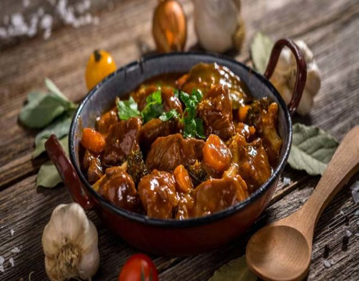
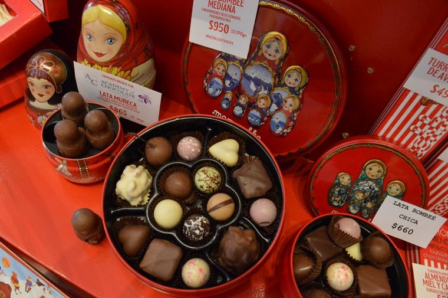
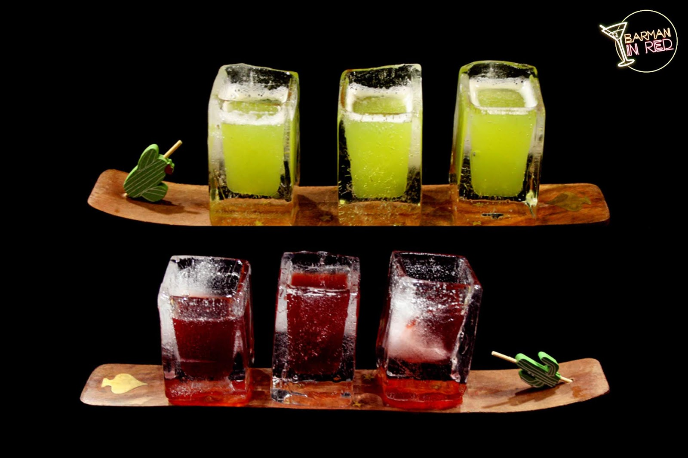

Estofado de ciervo
Este es un plato típico de caza, sabroso y muy aromático, La marinada además de potenciar el sabor ablanda la carne y la prepara para la cocción, además de aportar posteriormente una sabrosa salsa...
Trucha

Filet de trucha patagónica en salsa provenzal con papines y batatas. Un exquisito plato que podes hacer fácilmente en tu casa...
Chocolates
Otro clásico de esta zona son los chocolates. Si no comiste unos buenos trozos de chocolate en rama no podés decir que estuviste en la Patagonia…
Helados

Los helados patagonicos son lo mas ricos que hay que en toda la argentina,ya que ah mismo se encuentra muchas heladeria muy famosas por sus nombres...
Cervezas

Para los mas tenemos las mejores cervezas,hay muchas marcas y variedades de cervezas,entre ella esta patagonia,pero para los amatenes de las cervezas tenemos muchas variedes y es imposible no pobrarnos una...
Tragos
Siguiendo de la mano de las bebidas,les traigos los tragos cervidos en vasos de hielos. Este lugar es muy concurrido porque son uno de los pocos bares que tienen camaras de hielo,el cual te resiven asi..